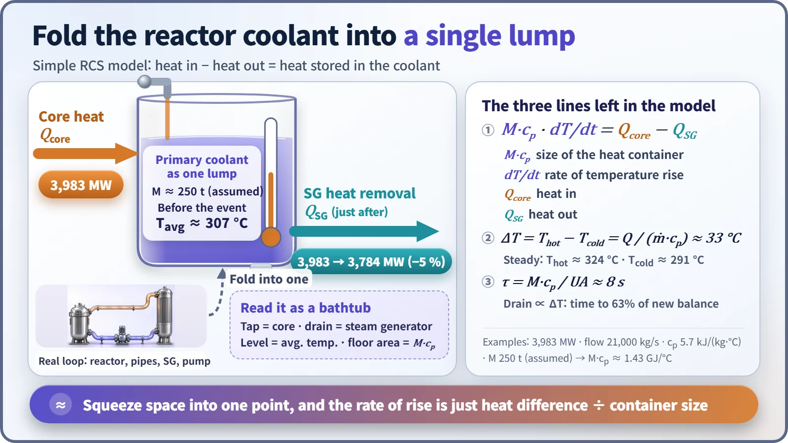
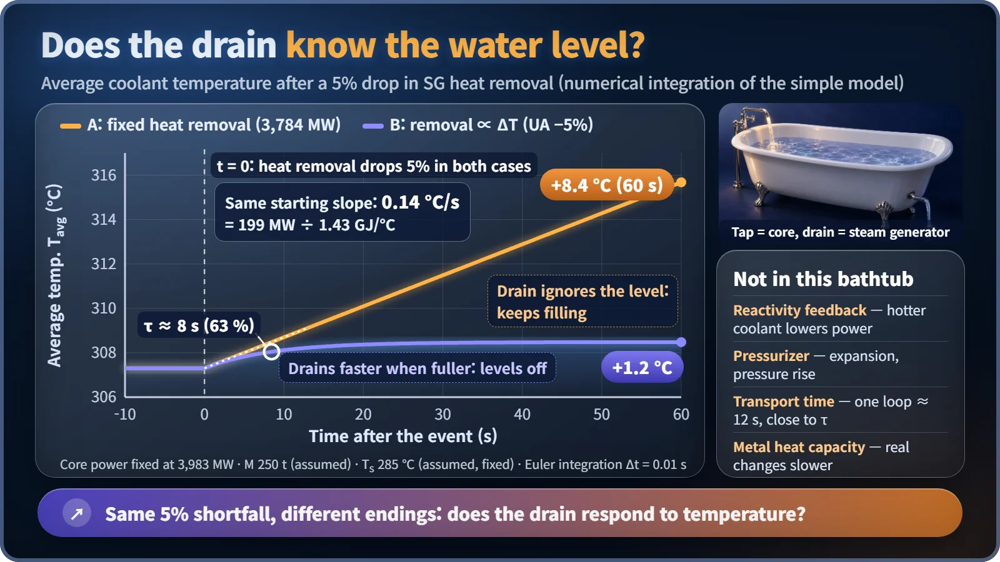

Modeling, Simulation & Computation · 270
Folding a Reactor's Cooling Water into One Bathtub — Building a Simple RCS Model
Heat in minus heat out, divided by the size of the container: a pencil-and-paper model of the reactor coolant system.
Treat all the reactor's cooling water as one lump with a single temperature, and one energy balance tells you how fast it heats up: M·cp·dT/dt = Q_core − Q_SG. For an APR1400-class example, a 5% drop in steam-generator heat removal raises the average coolant temperature by about 0.14 °C per second, a little over 8 °C a minute, if nothing else responds. [1]
A puzzle you can solve on paper
At a large nuclear plant, the steam generators suddenly remove 5% less heat than usual, while the reactor keeps producing heat as before. How fast does the circulating coolant warm up? No supercomputer needed: the answer is a little over 8 degrees a minute, and the tool that gets you there is the simple RCS model.
Erase everything except the tap and the drain
The Reactor Coolant System (RCS) is a giant loop: water heated in the reactor flows to the steam generators, hands over its heat, and is pumped back. Picture it as a bathtub. The tap is the heat from the reactor core, the drain is the heat the steam generators remove, and the water level is the average coolant temperature.
Then make a bold simplification: treat all the water in the reactor, pipes and steam generators as one lump with a single temperature. This is a lumped model, the opposite end of the scale from computer codes that split the system into hundreds of cells.

One equation; the tub's floor area is the key
M·cp·dT/dt = Q_core − Q_SG
dT/dt is how fast the average temperature changes; the right side is heat in minus heat out. M is the coolant mass and cp its specific heat, so M·cp is the bathtub's floor area: the bigger the container holding the heat, the more slowly the temperature moves. [3]
| Quantity | Example value |
|---|---|
| Thermal power | 3,983 MW |
| Pressure | 15.5 MPa |
| Specific heat at about 300 °C | about 5.7 kJ/(kg·°C) (room-temperature water: about 4.2) |
| Coolant mass M | 250 t (assumed) |
| M·cp | about 1.43 GJ/°C |
| Imbalance after a 5% cut | about 199 MW |
| Rate of rise | 0.14 °C/s, about 8.4 °C/min |
A bonus: the core temperature rise is ΔT = Q/(ṁ·cp). With an example flow of about 21,000 kg/s, ΔT is about 33 °C, matching the APR1400's cold leg at about 291 °C and hot leg at about 324 °C, for an average of about 307 °C. [2]
Does the drain know the water level?
Whether the temperature climbs forever depends on the drain. A drain with a pump that always removes the same amount lets the tub fill until it overflows: fixed heat removal. An ordinary drain flows faster as the level rises, so the tub settles at a new level. A steam generator behaves like the second kind, removing more heat as the coolant gets hotter: Q_SG = UA·(Tavg − Ts), with the steam-side temperature Ts assumed to be about 285 °C.

Both curves leave with the same slope. The fixed case rises about 8.4 °C in 60 seconds and keeps going; the proportional case levels off about 1.2 °C higher. The time constant τ = M·cp/UA, about 8 seconds here, is the time to cover 63% of the final rise, not the time to finish; nearly catching up takes three or four times longer.
What this bathtub leaves out
- Reactivity feedback: a pressurized water reactor lowers its own power when the coolant heats up, so the real rise is gentler than with Q_core held fixed.
- The pressurizer: heated water expands into it and pressure and level rise; the model holds pressure constant.
- Transport time: one lap of 250 tonnes at 21,000 kg/s takes about 12 seconds, close to τ, a sign the model is rough on a scale of seconds.
- Metal heat capacity: the vessel and piping store heat too, so real changes are slower.
Key takeaways
A simple model is not a wrong model; it only has to fit its question. Experts often sanity-check complex results with hand calculations like this. Temperature is changed by the difference between heat in and heat out, its speed is set by M·cp, and a model is trustworthy only when you know what it leaves out.